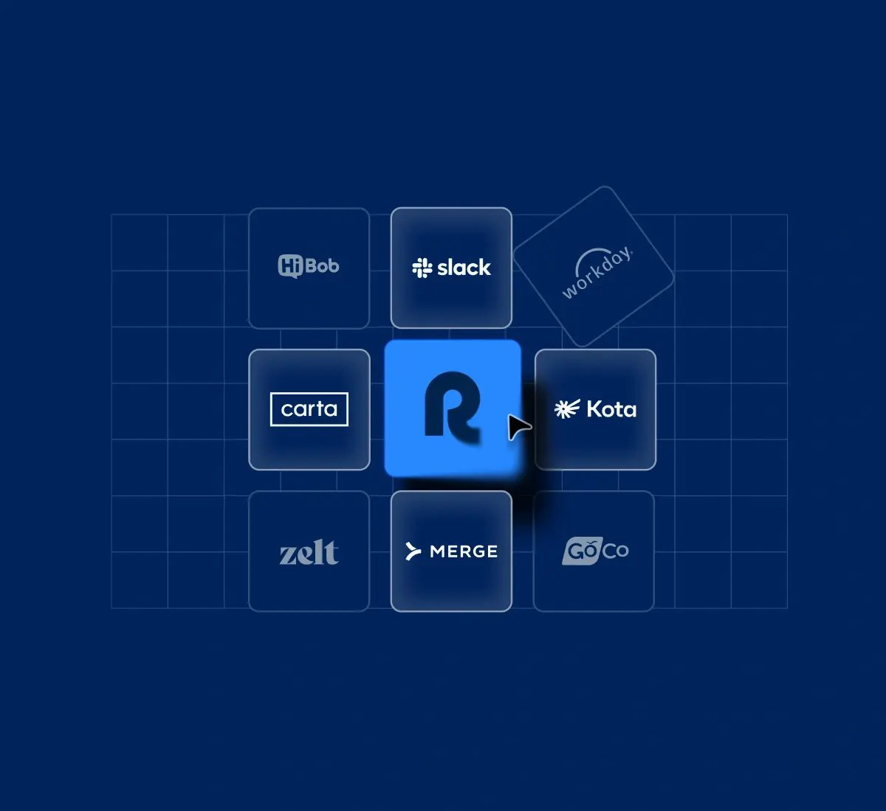

Set up in minutes
No manual wiring — you're live the same day.

One simpler way to work
Set up in minutes
No manual wiring — you're live the same day.

One source of truth
Everyone sees the same thing, always up to date.

Scales with you
From your first project to your thousandth.
Customer proof
We replaced three tools in a week and never looked back.
Operations lead — Mid-market team
Ready to get everything in one place?
Ready to get everything in one place?